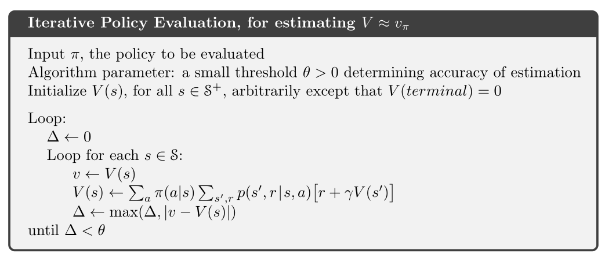
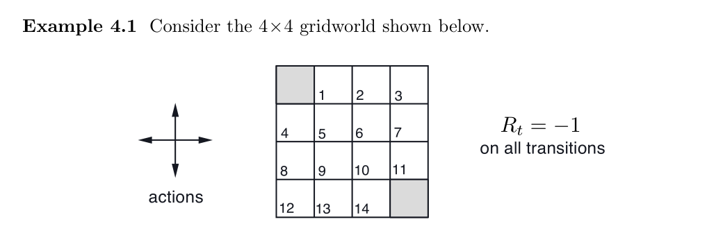
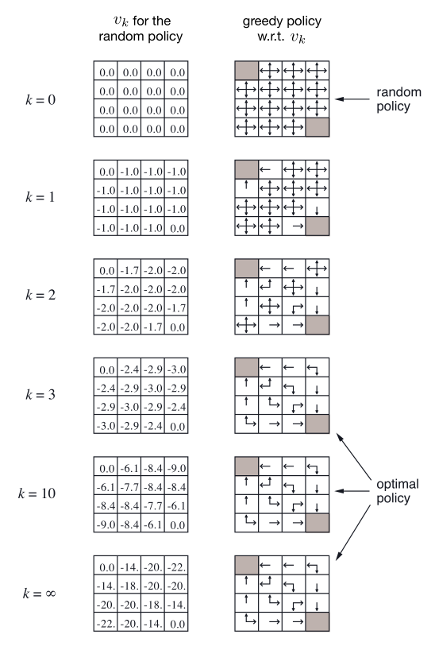
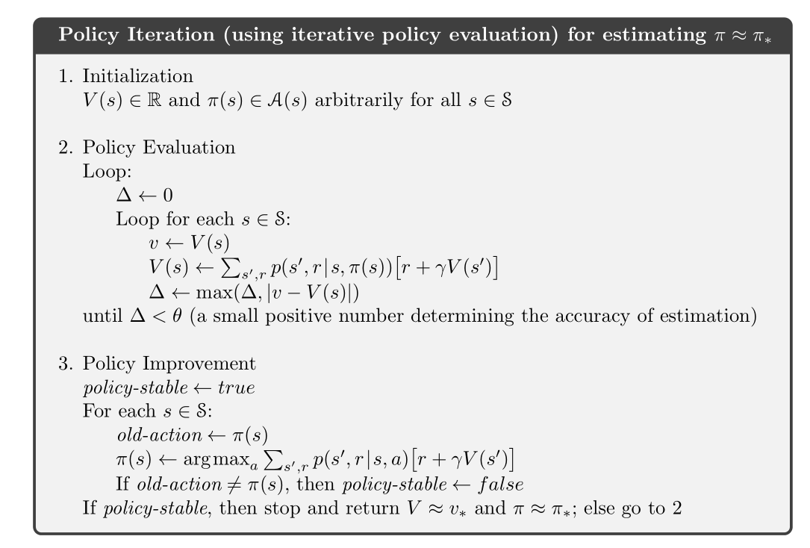
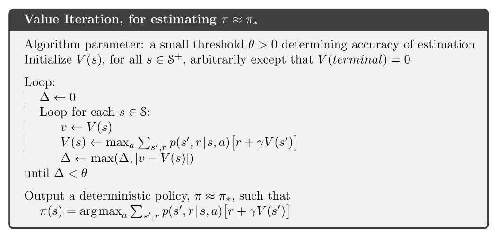
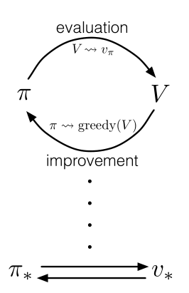
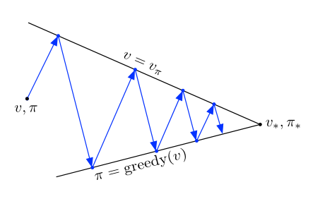

复习了一下Sutton书中的第四章，动态规划，整理一下。
动态规划算法是所有强化学习算法的基础，所有强化学习算法都可以看作是为了得到和动态规划相同的效果，同时减少计算量和对环境模型的依赖。
这一章节主要分为三部分：策略评估，策略改进，策略迭代。
策略评估：对于一个给定的策略下，迭代地计算策略的价值函数。
策略改进：根据一个旧的策略的值函数，计算一个改进的策略。
将这两种方法结合起来，可以得到策略迭代算法和价值迭代算法。
强化学习算法的关键是使用价值函数来寻找到更加好的策略，首先定义价值函数，其满足Bellman最优性方程：
\[\begin{aligned} v_{*}(s) &=\max _{a} \mathbb{E}\left[R_{t+1}+\gamma v_{*}\left(S_{t+1}\right) \mid S_{t}=s, A_{t}=a\right] \\ &=\max _{a} \sum_{s^{\prime}, r} p\left(s^{\prime}, r \mid s, a\right)\left[r+\gamma v_{*}\left(s^{\prime}\right)\right], \text { or } \end{aligned}\]
\[\begin{aligned} q_{*}(s, a) &=\mathbb{E}\left[R_{t+1}+\gamma \max _{a^{\prime}} q_{*}\left(S_{t+1}, a^{\prime}\right) \mid S_{t}=s, A_{t}=a\right] \\ &=\sum_{s^{\prime}, r} p\left(s^{\prime}, r \mid s, a\right)\left[r+\gamma \max _{a^{\prime}} q_{*}\left(s^{\prime}, a^{\prime}\right)\right] \end{aligned}\]
策略评估
目的：给定一个策略\(\pi\)，计算它的状态价值函数，也可以被称为预测问题。
\[\begin{aligned} v_{\pi}(s) & \doteq \mathbb{E}_{\pi}\left[G_{t} \mid S_{t}=s\right] \\ &=\mathbb{E}_{\pi}\left[R_{t+1}+\gamma G_{t+1} \mid S_{t}=s\right] \\ &=\mathbb{E}_{\pi}\left[R_{t+1}+\gamma v_{\pi}\left(S_{t+1}\right) \mid S_{t}=s\right] \\ &=\sum_{a} \pi(a \mid s) \sum_{s^{\prime}, r} p\left(s^{\prime}, r \mid s, a\right)\left[r+\gamma v_{\pi}\left(s^{\prime}\right)\right] \end{aligned}\]
如果环境动态是完全已知的，那么通过上述价值函数的表达式，可以列出\(|S|\)个未知数的\(|S|\)个方程构成线性方程组，其中，\(|S|\)代表状态\(s\)的个数，但是计算过程有些繁杂，因此，采用迭代计算的方式：
\[\begin{aligned} v_{k+1}(s) & \doteq \mathbb{E}_{\pi}\left[R_{t+1}+\gamma v_{k}\left(S_{t+1}\right) \mid S_{t}=s\right] \\ &=\sum_{a} \pi(a \mid s) \sum_{s^{\prime}, r} p\left(s^{\prime}, r \mid s, a\right)\left[r+\gamma v_{k}\left(s^{\prime}\right)\right] \end{aligned}\]
\(v_{k}=v_{\pi}\)是一个不动点（通过巴拿赫不动点定理来证明），当\(k \rightarrow \infty\)时，\(\{v_k\}\)能够收敛到\(v_\pi\)。

仿真算例：

一个简单的额GridWorld的例子，通过不断迭代，即可算出所有的价值函数，代码：
1 | import numpy as np |
结果：

策略改进
计算价值函数的一个原因是为了找到更好的策略，我们可以知道如果从状态\(s\)使用现有的策略，那么我们可以得到的就是\(v_\pi(s)\)。那么当我们更换一个策略的时候，我们怎么知道是更好还是更坏呢。
一种解决方法是在状态\(s\)选择动作\(a\)后，继续遵循现有的策略\(\pi\)，计算\(q_\pi\)(s,a)
一个关键的准则就是这个值是大于还是小于\(v_\pi(s)\)的，如果这个值更大，那么说明在状态\(s\)选择一次动作\(a\)，然后继续使用策略\(\pi\)会比始终使用策略\(\pi\)更优化。
如果\(\pi\)和\(\pi'\)是两个确定的策略，当：
\[q_{\pi}\left(s, \pi^{\prime}(s)\right) \geq v_{\pi}(s)\]
那么我们称策略\(\pi'\)相比于策略\(\pi\)一样好或者更好。
证明过程：
\[\begin{aligned} v_{\pi}(s) & \leq q_{\pi}\left(s, \pi^{\prime}(s)\right) \\ &=\mathbb{E}\left[R_{t+1}+\gamma v_{\pi}\left(S_{t+1}\right) \mid S_{t}=s, A_{t}=\pi^{\prime}(s)\right] \\ &=\mathbb{E}_{\pi^{\prime}}\left[R_{t+1}+\gamma v_{\pi}\left(S_{t+1}\right) \mid S_{t}=s\right] \\ & \leq \mathbb{E}_{\pi^{\prime}}\left[R_{t+1}+\gamma q_{\pi}\left(S_{t+1}, \pi^{\prime}\left(S_{t+1}\right)\right) \mid S_{t}=s\right] \\ &=\mathbb{E}_{\pi^{\prime}}\left[R_{t+1}+\gamma \mathbb{E}_{\pi^{\prime}}\left[R_{t+2}+\gamma v_{\pi}\left(S_{t+2}\right) \mid S_{t+1}, A_{t+1}=\pi^{\prime}\left(S_{t+1}\right)\right] \mid S_{t}=s\right] \\ &=\mathbb{E}_{\pi^{\prime}}\left[R_{t+1}+\gamma R_{t+2}+\gamma^{2} v_{\pi}\left(S_{t+2}\right) \mid S_{t}=s\right] \\ & \leq \mathbb{E}_{\pi^{\prime}}\left[R_{t+1}+\gamma R_{t+2}+\gamma^{2} R_{t+3}+\gamma^{3} v_{\pi}\left(S_{t+3}\right) \mid S_{t}=s\right] \\ & \vdots \\ & \leq \mathbb{E}_{\pi^{\prime}}\left[R_{t+1}+\gamma R_{t+2}+\gamma^{2} R_{t+3}+\gamma^{3} R_{t+4}+\cdots \mid S_{t}=s\right] \\ &=v_{\pi^{\prime}}(s) \end{aligned}\]
到目前为止，我们已经看到了，给定一个策略及其价值函数，我可以很容易评估一个状态中某个特定动作的改变会产生怎样的后果。我们可以很自然地延伸到所有的状态和所有可能的动作，即在每个状态下根据\(q_\pi(s, a)\)选择一个最优的：
\[\begin{aligned} \pi^{\prime}(s) & \doteq \underset{a}{\arg \max } q_{\pi}(s, a) \\ &=\underset{a}{\arg \max } \mathbb{E}\left[R_{t+1}+\gamma v_{\pi}\left(S_{t+1}\right) \mid S_{t}=s, A_{t}=a\right] \\ &=\underset{a}{\arg \max } \sum_{s^{\prime}, r} p\left(s^{\prime}, r \mid s, a\right)\left[r+\gamma v_{\pi}\left(s^{\prime}\right)\right] \end{aligned}\]
这种根据原策略的价值函数执行贪心算法，来构造一个更好策略的过程，称为策略改进
策略迭代
一旦一个策略\(\pi\)根据\(v_\pi\)产生了一个更好的策略\(\pi'\)，我们就可以通过计算\(v_{\pi'}\)来得到一个更优的策略\(\pi''\)，这样一个链式的方法可以得到一个不断改进的策略和价值函数的序列：
\[\pi_{0} \stackrel{\mathrm{E}}{\longrightarrow} v_{\pi_{0}} \stackrel{\mathrm{I}}{\longrightarrow} \pi_{1} \stackrel{\mathrm{E}}{\longrightarrow} v_{\pi_{1}} \stackrel{\mathrm{I}}{\longrightarrow} \pi_{2} \stackrel{\mathrm{E}}{\longrightarrow} \cdots \stackrel{\mathrm{I}}{\longrightarrow} \pi_{*} \stackrel{\mathrm{E}}{\longrightarrow} v_{*}\]

价值迭代
策略迭代算法的一个缺点是每一次迭代都涉及了策略评估，这本身就是一个需要多次遍历状态集合的迭代过程，如果策略评估是迭代进行的，那么收敛到\(v_\pi\)理论上在极限处才成立。
上面GridWorld的例子很明显就能说明，我们可以提前截断策略评估的过程，在这个例子中，前三轮策略评估之后的迭代对其贪心策略没有产生影响。
事实上，由很多方式可以截断策略迭代中的策略评估步骤，一种重要的方法是：在每一次遍历后即刻停止策略评估（对每个状态进行一次更新）。该算法被称为价值迭代，可以将此表示为结合了策略改进与截断策略评估的简单更新公式：
\[\begin{aligned} v_{k+1}(s) & \doteq \max _{a} \mathbb{E}\left[R_{t+1}+\gamma v_{k}\left(S_{t+1}\right) \mid S_{t}=s, A_{t}=a\right] \\ &=\max _{a} \sum_{s^{\prime}, r} p\left(s^{\prime}, r \mid s, a\right)\left[r+\gamma v_{k}\left(s^{\prime}\right)\right] \end{aligned}\]
价值迭代与策略评估的更新公式几乎完全相同。
理论上价值迭代需要迭代无限次才能收敛，事实上，如果一次遍历中仅发生一些细微的变化，那么就可以停止。

广义策略迭代
策略迭代包括两个同时进行的相互作用的流程，一个使得价值函数与当前策略一致（策略评估），另一个根据当前价值函数贪心地更新策略（策略改进）。
用广义策略迭代（GPI）一词来指代让策略评估和策略改进相互作用地一般思路，几乎所有的强化学习算法都可以被描述成广义策略迭代算法：

价值函数只有在与当前策略一致时才稳定，并且策略只有在对当前价值函数是贪心策略时才稳定。
可以将GPI的评估与改进流程看作竞争与合作。竞争是指它们朝着相反的方向前进，让策略对价值函数贪心通常会使价值函数与当前策略不再匹配，而使价值函数与策略一致通常会导致策略不再贪心。合作是指从长远看，这两个流程相互作用以找到一个联合解决方案：最优价值函数和一个最优策略。

动态规划的效率
DP算法有时会因为维度灾难而被认为缺乏实用性。集合太大确实会带来一些困难，但是这是问题本身的困难，而非DP作为一种解法所带来的困难。事实上，相比于直接搜索和线性规划，DP更加适合解决大规模状态空间的问题。